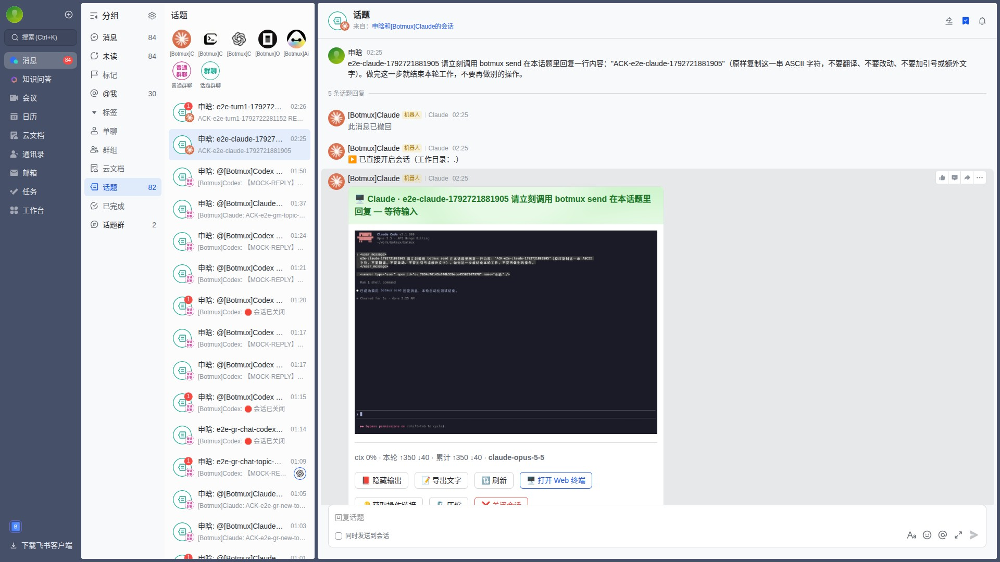
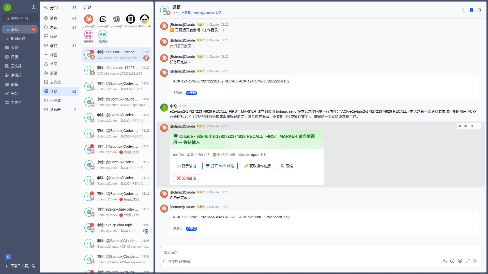
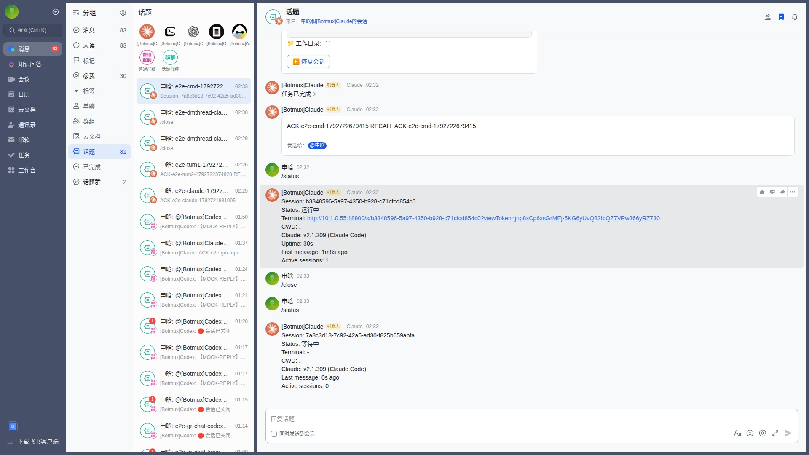
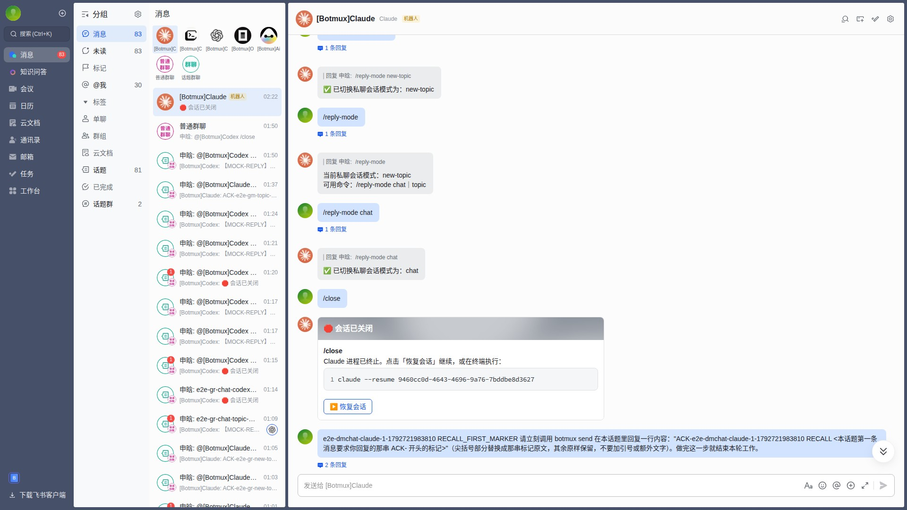
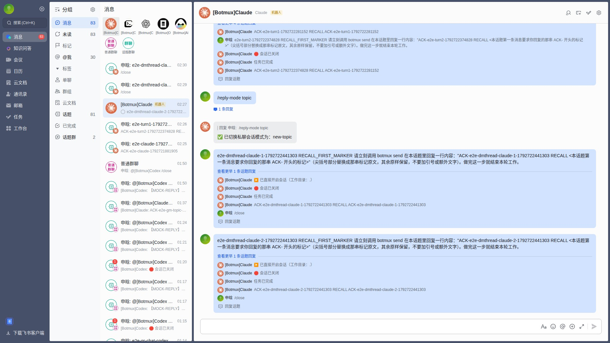
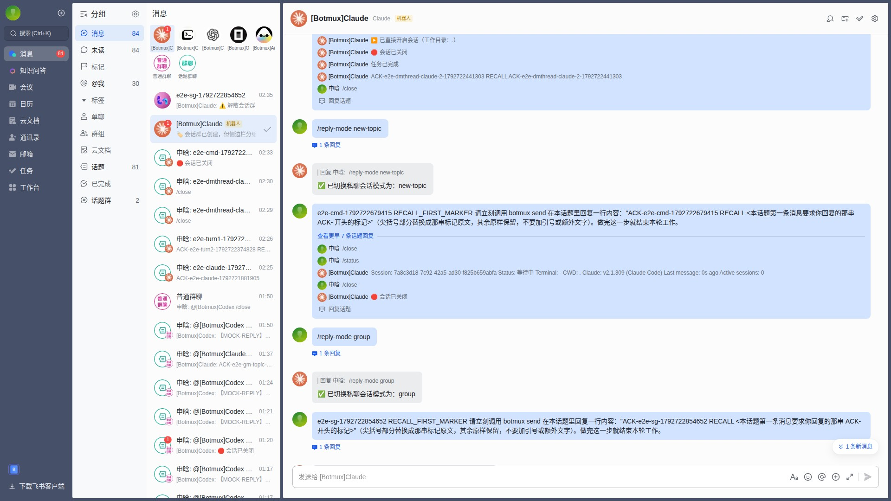

Botmux × Midscene
7/7 cases passed · 0 failed · 0 skipped · 0 not run
| Case | Project | Status | Duration | Node screenshot | Replay | |
|---|---|---|---|---|---|---|
| ✅ | Navigate the core read-only Dashboard pages | dashboard-smoke | success | 41.1 s |  | Not available |
| ✅ | Claude basic bot flow | feishu-core-claude | success | 527.1 s |  | Passed — recording kept in the run artifact |
| ✅ | Follow-up in the same topic keeps context | feishu-core-conversation | success | 560.8 s |  | Passed — recording kept in the run artifact |
| ✅ | Thread /status and /close commands | feishu-core-conversation | success | 391.4 s |  | Passed — recording kept in the run artifact |
| ✅ | Claude DM chat mode replies inline and keeps one session | feishu-core-dm-modes-claude | success | 379.1 s |  | Passed — recording kept in the run artifact |
| ✅ | Claude DM thread mode gives each message its own topic and session | feishu-core-dm-modes-claude | success | 403.1 s |  | Passed — recording kept in the run artifact |
| ✅ | Claude DM group mode moves the conversation into a new session group | feishu-core-dm-modes-claude | success | 371.0 s |  | Passed — recording kept in the run artifact |